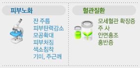

IPL
Photofacial (광회소술)이란? IPL(Intense
Pulsed Light) system을 이용한 것으로써 빛을 얼굴 전체
부위에 쪼여서 모든 스킨 트러블을 개선시키는 시술법입니다. 또한
IPL Photofacial은 피부를 활성화하고 피부의 팽팽함을 유지 하는
데 필요한 콜라겐을 증가시킵니다.
IPL
Photofacial 적용범위 광회소술은
피부노화와 혈관질환으로 나뉘어집니다.

IPL Photofacial을 이용한 치료방법은?
각 치료는 대략 15분 가량 소요되며 총 3~5회의 치료가 필요
합니다. Pigment 같은 경우에는 치료 후에 일반적으로 더
진해집니다. 치료 후 위의 현상들은 몇 일이 지나면 얇게 딱지가
생기게 되고 시간이 지나면 떨어지면서 점차 흐려지게 됩니다.
IPL Photofacial 치료에 적합한 사람들은?
- 주사나 얼굴 붉어짐으로 고생하는 사람들
- 광 피부노화나 자연적으로 노화된
피부를 개선하여 좀 더 젊고
- 건강한 피부를 갖고 싶어하는 사람들
- 레이져 치료나 화학약품을 이용한 박피 시술처럼 긴 치료기간을
- 원하지 않고 시술 후에도 곧바로
일상생활을 하고 싶어하는
- 사람들
- 사회생활이나 일상생활에 지장을 받고 싶지 않는 사람들